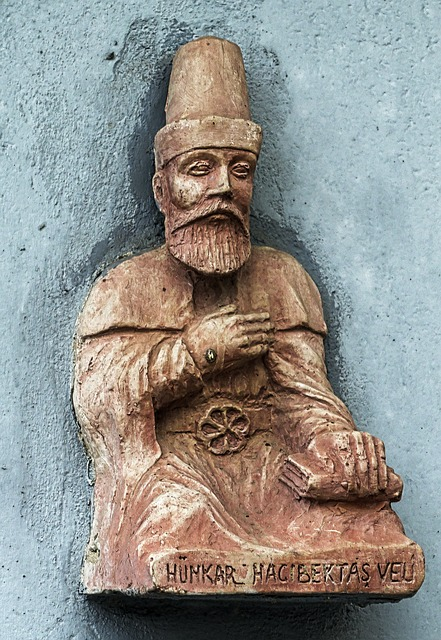

Geri Dön
Hacı Bektaş Veli Türbesi, Nevşehir

Hacı Bektaş Veli Türbesi Gezi Rehberi: Anadolu'nun Manevi Mirası
Hacı Bektaş Veli Türbesi, Türkiye'nin Nevşehir iline bağlı Hacıbektaş ilçesinde yer alan, Bektaşilik tarikatının kurucusu ve Anadolu'nun en önemli tasavvuf büyüklerinden biri olan Hacı Bektaş Veli'nin türbesini barındıran önemli bir manevi merkezdir. Bu türbe, tarih boyunca Anadolu'nun manevi ve kültürel yaşamında büyük bir rol oynamıştır. İşte Hacı Bektaş Veli Türbesi’ni ziyaret etmek isteyenler için hazırladığımız gezi rehberi:
Hacı Bektaş Veli Kimdir?
- Hacı Bektaş Veli (1209-1271), Horasan'dan Anadolu'ya gelen ve burada Bektaşilik tarikatını kuran büyük bir mutasavvıftır. Onun öğretileri, sevgi, hoşgörü, insan sevgisi ve toplumsal eşitlik gibi evrensel değerler üzerine kurulmuştur. Hacı Bektaş Veli, özellikle Alevi-Bektaşi geleneğinde önemli bir figür olarak kabul edilir ve Anadolu’da hoşgörünün, kardeşliğin sembolü olmuştur.
Türbenin Tarihi ve Önemi
- Hacı Bektaş Veli Türbesi, Hacı Bektaş Veli’nin vefatından sonra onun adına inşa edilmiştir ve zamanla bir külliye haline gelmiştir. Bu külliye, sadece Hacı Bektaş Veli'nin türbesini değil, aynı zamanda Bektaşiliğin merkezi olan birçok başka yapıyı da barındırır.
- Türbe, hem Alevi-Bektaşi toplumu için hem de diğer ziyaretçiler için önemli bir manevi merkezdir. Her yıl Ağustos ayında düzenlenen Hacı Bektaş Veli Anma Törenleri, Türkiye ve dünyadan binlerce ziyaretçiyi bu kutsal mekana çeker.
Türbe ve Külliye Bölümleri
-
Üçler Kapısı ve Nadar Avlusu
- Üçler Kapısı: Türbe girişinde bulunan bu kapı, Hacı Bektaş Veli’nin öğretilerine göre insanın manevi yolculuğunda atması gereken üç adımı (şeriat, tarikat, hakikat) simgeler. Bu kapıdan geçmek, ziyaretçilere manevi bir başlangıç hissi verir.
- Nadar Avlusu: Kapıdan girince ulaşılan avlu, külliyenin ana bölümüne geçiş noktasıdır. Bu avlu, türbe ve külliyeyi ziyaret edenlerin bir araya geldiği, manevi atmosfere adım attığı bir alandır.
-
Dergah Meydanı
- Dergah Meydanı: Nadar Avlusu'ndan geçerek ulaşılan bu meydan, Hacı Bektaş Veli Dergahı’nın kalbidir. Burada, Hacı Bektaş Veli’nin mesajlarının yayılmasında önemli rol oynayan dergah binası bulunur. Dergah, tarihte Bektaşi dervişlerinin eğitim aldığı, ibadet ettiği ve toplandığı yer olarak kullanılmıştır.
-
Pir Evi
- Pir Evi:Dergahın merkezinde yer alan Pir Evi, Hacı Bektaş Veli’nin yaşadığı, eğitim verdiği ve talebeleriyle buluştuğu yerdir. Bu ev, geleneksel Anadolu mimarisi ile inşa edilmiş olup, Hacı Bektaş Veli'nin günlük yaşamını yansıtan bir atmosfer sunar.
- Pir Evi Müzesi: Pir Evi'nin içinde, Hacı Bektaş Veli’nin kullandığı eşyalar, el yazmaları, ve Bektaşi kültürüne dair eserler sergilenir. Bu müze, ziyaretçilere Hacı Bektaş Veli’nin yaşamı ve öğretileri hakkında derin bir bilgi sunar.
-
Meydan Evi
- Meydan Evi: Bektaşilik tarikatının önemli ritüellerinin ve ayinlerinin yapıldığı yerdir. Bu yapı, tarikatın geleneklerini ve manevi uygulamalarını tanımak için önemli bir duraktır. Burada, semah ayinlerinin yapıldığı ve dervişlerin toplandığı alanları görebilirsiniz.
-
Balım Sultan Türbesi
- Balım Sultan Türbesi: Hacı Bektaş Veli’den sonra Bektaşilik tarikatının düzenleyicisi ve ikinci pir olarak kabul edilen Balım Sultan’ın türbesi de bu külliyede yer alır. Balım Sultan, Bektaşilik tarikatının kurumsallaşmasında önemli bir rol oynamıştır.
-
Aş Evi ve Kiler
- Aş Evi: Külliyenin sosyal işlevlerinden biri olan aş evi, dervişlerin ve misafirlerin yemek yediği yerdi. Burada, geleneksel olarak büyük kazanlarda pişirilen yemekler, misafirlere ve yoksullara sunulurdu.
- Kiler:Külliyenin kileri, ihtiyaç duyulan erzakların saklandığı ve dağıtıldığı yerdir. Bu yapı, Hacı Bektaş Veli’nin "eline, beline, diline sahip ol" öğretisinin pratiğe döküldüğü bir alan olarak dikkat çeker.
Ziyaret İçin İpuçları
- Ziyaret Saatleri: Hacı Bektaş Veli Türbesi ve Külliyesi, haftanın her günü ziyarete açıktır. Yaz aylarında (Nisan-Ekim) 08:00-18:00, kış aylarında (Kasım-Mart) ise 08:00-16:00 saatleri arasında ziyaret edilebilir.
- Giriş Ücreti:Türbe ziyareti için giriş ücreti alınmaz. Ancak, müze ve külliyenin diğer bölümlerini ziyaret etmek için küçük bir ücret talep edilebilir.
- Ziyaret Kuralları:Türbe ve külliye içinde saygılı bir davranış sergilemek önemlidir. Ziyaret sırasında sessiz olunmalı, fotoğraf çekimi kurallarına uyulmalıdır. Özellikle türbe içinde, ziyaretçilerden saygılı bir şekilde davranmaları beklenir.
- Hacı Bektaş Veli Anma Törenleri:Her yıl Ağustos ayında düzenlenen Hacı Bektaş Veli Anma Törenleri, hem manevi hem de kültürel bir deneyim sunar. Bu dönemde Hacıbektaş ilçesi, Türkiye ve dünyanın dört bir yanından gelen ziyaretçilerle dolup taşar.
Sonuç
Hacı Bektaş Veli Türbesi ve Külliyesi, Anadolu’nun manevi zenginliklerini keşfetmek, Bektaşilik kültürünü daha yakından tanımak ve Hacı Bektaş Veli’nin öğretilerini derinlemesine anlamak isteyenler için önemli bir ziyaret noktasıdır. Türbe, ziyaretçilere sadece bir tarihî mekân sunmakla kalmaz, aynı zamanda manevi bir yolculuğa çıkma fırsatı verir. Nevşehir’e yolunuz düştüğünde, bu kutsal ve tarihi mekânı ziyaret ederek, Hacı Bektaş Veli’nin insanlığa sunduğu hoşgörü ve sevgi dolu mesajları bizzat hissedebilirsiniz.